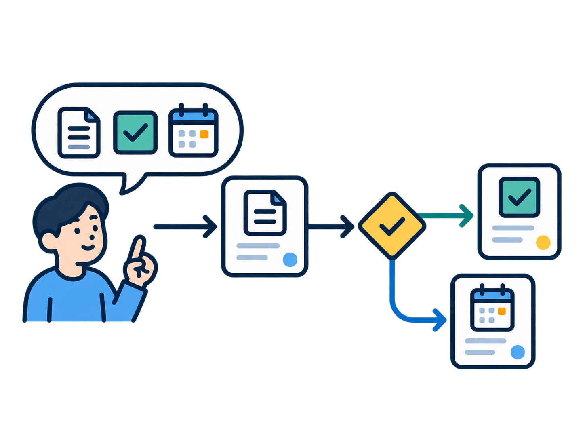
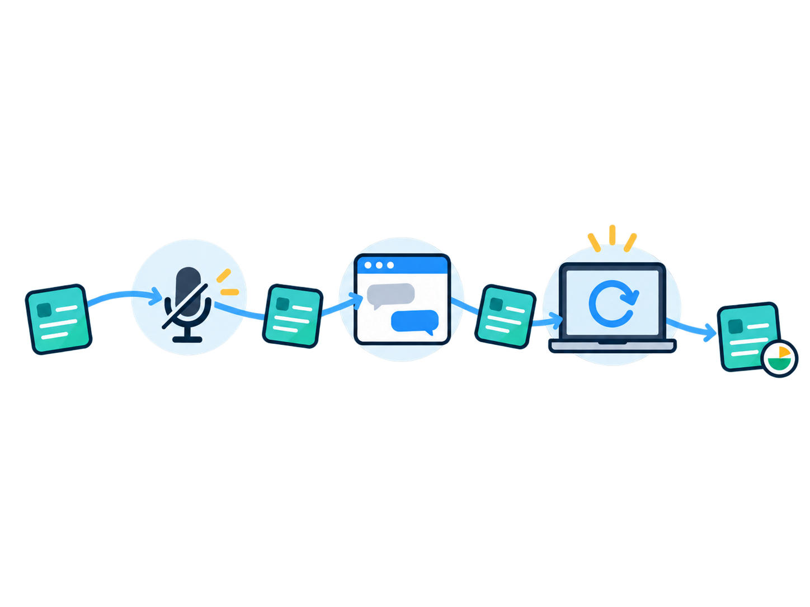

<!doctype html>
<html lang="ko"><meta charset="utf-8"><meta name="viewport" content="width=device-width,initial-scale=1"><title>VIA 요구사항 그림</title>
<style>
*{box-sizing:border-box}body{margin:0;background:#f0f3f7;color:#132a3d;font-family:-apple-system,BlinkMacSystemFont,"Apple SD Gothic Neo",sans-serif}
main{max-width:1440px;margin:48px auto;padding:0 28px}h1{font-size:28px;margin:0 0 12px}p{line-height:1.7;color:#526578}
nav{display:flex;gap:12px;margin:20px 0 28px;align-items:center;flex-wrap:wrap}button{border:1px solid #c6d4de;background:white;border-radius:8px;padding:9px 16px;cursor:pointer;color:#132a3d}
.grid{display:grid;grid-template-columns:repeat(4,minmax(0,1fr));gap:20px}
article{background:white;border:1px solid #dbe3ea;border-radius:12px;overflow:hidden}img{display:block;width:100%;height:240px;object-fit:contain;padding:16px;background:var(--art-bg,#fff)}
.caption{padding:16px;display:grid;grid-template-columns:40px 1fr;gap:8px;font-size:15px;border-top:1px solid #e4ebf0}.caption a{grid-column:2;font-size:12px;color:#27688b}
body.checker{--art-bg:repeating-conic-gradient(#e7edf2 0% 25%,#fff 0% 50%) 50%/20px 20px}
body.dark{--art-bg:#182b3e}a{color:#27688b}@media(max-width:1000px){.grid{grid-template-columns:repeat(2,minmax(0,1fr))}}@media(max-width:550px){.grid{grid-template-columns:1fr}}
</style>
<main><h1>VIA 기능 요구사항과 제약사항 그림</h1><p>발표에 선택적으로 사용할 개념 일러스트 8개입니다. 특정 설계 대안이나 구현 결과를 나타내지 않습니다.</p>
<nav><button onclick="document.body.className=''">흰 배경</button><button onclick="document.body.className='checker'">투명도 확인</button><button onclick="document.body.className='dark'">어두운 배경</button><a href="../functional-requirements-and-constraints.md">요구사항 표</a><a href="prompts.md">생성 프롬프트</a></nav>
<section class="grid"><article><div class="caption"><strong>FR1</strong><span>지속 대화 처리</span><a href="fr1-continuous-dialogue.png" download>PNG 다운로드</a></div></article>
<article><div class="caption"><strong>FR2</strong><span>맥락 기반 요청 해석</span><a href="fr2-contextual-interpretation.png" download>PNG 다운로드</a></div></article>
<article><div class="caption"><strong>FR3</strong><span>복합 요청 처리</span><a href="fr3-compound-request.png" download>PNG 다운로드</a></div></article>
<article><div class="caption"><strong>FR4</strong><span>다중 업무 상호작용</span><a href="fr4-multiple-task-interaction.png" download>PNG 다운로드</a></div></article>
<article><div class="caption"><strong>FR5</strong><span>업무 연속성 유지</span><a href="fr5-task-continuity.png" download>PNG 다운로드</a></div></article>
<article><div class="caption"><strong>FR6</strong><span>과거 맥락 활용</span><a href="fr6-past-context.png" download>PNG 다운로드</a></div></article>
<article><div class="caption"><strong>C1</strong><span>온디바이스 Omni 공유</span><a href="c1-shared-on-device-omni.png" download>PNG 다운로드</a></div></article>
<article><div class="caption"><strong>C2</strong><span>업무 실행 위임</span><a href="c2-downstream-work-delegation.png" download>PNG 다운로드</a></div></article></section></main></html>
